Recupera horas cada semana
con IA y automatización.
Tecnología que por fin trabaja para ti
Quiénes somos
Somos una consultora especializada en inteligencia artificial, análisis de datos y automatización para pymes. Equipo senior, resultados medibles y proyectos que se amortizan solos.
«No necesitas más herramientas sueltas. Necesitas que la tecnología por fin trabaje para ti.»
Qué hacemos
Auditoría de madurez digital con hoja de ruta a 3–6 meses. Sabrás qué automatizar primero y cuánto ahorrarás.
Software y aplicaciones web construidas para tu operación real.
Cuadros de mando interactivos y KPIs en tiempo real.
Chatbots, agentes IA, análisis de texto y predicción de ventas.
Flujos de trabajo sin tareas repetitivas y con menos errores.
Estrategia de transformación digital con criterio senior.
Talleres prácticos para que tu equipo use la IA a diario.
Producto propio
Conecta tus documentos a un LLM y pregúntales en lenguaje natural.
Vigila licitaciones públicas y subvenciones con análisis por IA.
Planificación automática de turnos hospitalarios.
Motor de orquestación de flujos de trabajo entre sistemas.
Asistente IA con toda la información de Lanzarote.
Confían en nosotros
Resultados reales
Apariciones en medios
La IA aplicada a la empresa lanzaroteña: Atomtech acerca la automatización a las pymes de la isla.
Tecnología con impacto local: datos e inteligencia artificial desde Marina Innova Hub.
Estás en la puerta
Primera reunión sin compromiso. Te diremos qué automatizar primero y cuánto tiempo puedes recuperar.